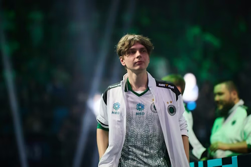

kyousuke

kyousuke — российский профессиональный игрок в Counter-Strike 2. Его настоящее имя — Максим Лукин. Он относится к молодому поколению игроков, которые быстро привлекли внимание CS2-сцены.
На данный момент kyousuke играет за Falcons. На странице он представлен как перспективный игрок, развивающийся на международном уровне.